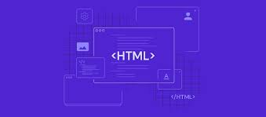

Fundamentos de HTML
El lenguaje de marcado de hipertexto (HTML) es un lenguaje informático que forma parte de la mayoría de las páginas web
aplicaciones en línea. Un hipertexto es un texto que se utiliza para enlazar con otros textos, mientras que un lenguaje de
marcado es una serie de marcas que indican a los servidores web la estructura y el estilo de un documento.
dentro de la tematica a aprender vamos a enontrar la siguiente: